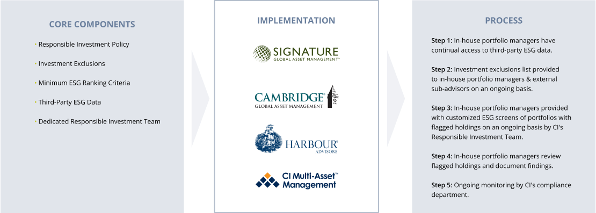
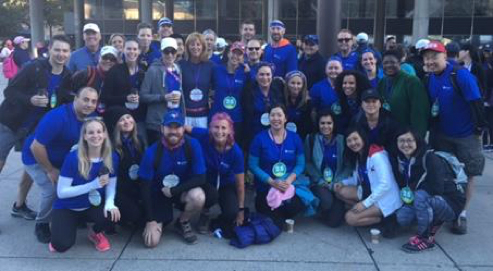
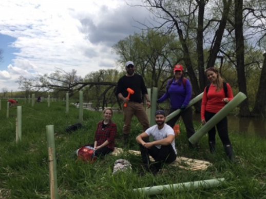

Corporate Social Responsibility
CI Financial strives to operate with responsibility and integrity, from the management of our funds to the conduct of all aspects of our business. We are committed to treating our employees and business partners with respect and consideration, to supporting communities across Canada, and to reducing our impact on the environment. This section highlights some of CI's efforts and achievements in these areas. Please see the Corporate Governance section for details of our governance policies.
Each year, CI is rated on its corporate social responsibility performance by various research firms. In 2017, CI was rated as an outperformer in the area of governance within the diversified financials sector group by research firm Sustainalytics.
Responsible Investing
- As a signatory to the United Nations-supported Principles for Responsible Investment (UNPRI), CI Investments believes that responsible investing plays a role in achieving the best possible risk-adjusted returns for our funds.
- CI Investments is an Associate Member of the Responsible Investment Association (RIA), Canada's membership association for responsible investment.
- CI Investments has a formal Responsible Investment Policy that addresses the integration of environmental, social and governance (ESG) factors into its decision-making process. While CI Investments does not normally exclude specific sectors or companies from investment, there are a few exceptions. In recognition of the prohibitions contained within the United Nations Anti-Personnel Landmines Convention and the United Nations Convention on Cluster Munitions, CI Investments will not knowingly directly invest in companies associated with the production, use or distribution of such weapons.
- CI Investments' in-house portfolio management teams, which include Signature Global Asset Management, Cambridge Global Asset Management, Harbour Advisors, and CI Multi-Asset Management, are integrating ESG factors into their investment processes with the support of a dedicated in-house Responsible Investment Team.
Responsible Investing at CI Investments

Employee Development
CI is committed to the ongoing development of our employees:
- Management Development Program provides front-line managers with an assessment, development plan, and a core curriculum of six courses that support CI's management competencies.
- Reinforcing Leadership Development assists senior managers in supporting their front-line managers.
- Employee mentoring initiatives include our Women's Mentorship Program and the launch of a broader Mentorship Program available to both male and female employees.
- In our Wellness Program for employees, initiatives include individual health assessments with a nutritionist, lunch time workout classes and monthly "Lunch and Learn" sessions focused on wellness in the workplace.
- In 2017, CI received Great Place to Work® Certification for the second consecutive year. Certification is based on an independent and credible evaluation methodology that takes actual employee feedback into account.
- CI Service Recognition Program celebrates the contributions of long-serving employees. Employees who reach certain anniversaries of employment with CI are awarded additional paid days off known as "milestone days."
- Take Your Kids to Work Day provides opportunities for students to gain exposure to the working world through our summer student program.
- The Ray platform, introduced in 2017, allows CI employees to share innovative ideas with one another and with management to enhance employee experience and our operations. CI has implemented 13 employee ideas so far.
- Over $400K invested in employee development and training
- Over 80 mentor/mentee relationships
- Over 70 summer students hired
- Over 30 high school students participated in Take Our Kids to Work Day
Community Support
CI is committed to supporting communities across Canada. In 2017, we contributed over $700,000 through company and employee donations and charitable giving—an increase of over 30% from 2016. We also proudly launched our Ray Day Program, which allows CI employees to dedicate one work day of the year to volunteer and support a cause of their choice. Below are a few examples of CI's contributions.
As a Premier sponsor of the first annual SickKids GetLoud event, CI is helping to build a new SickKids Hospital. CI employees will be fundraising for SickKids Foundation, then marching with a 3000+ army of supporters for 5 kilometres through the city of Toronto.
To help build a new SickKids, CI is ready to GetLoud!
The Rexall™ OneWalk To Conquer Cancer is a prominent fundraising event that raises funds for cancer research and care.
In 2017, 45 CI employees participated in the walk. As a firm, CI used multiple fundraising avenues, including employee fundraising, a bake sale and a silent auction, to raise over $175,000 for this cause.
Overall, CI placed first in the Industry Challenge and first for corporate team fundraising.

CI is proud to partner with Wilfrid Laurier University on a vision of preparing Canada's next generation of financial managers and to provide support for the Building Canada's Best Business School fundraising campaign.
In 2017, CI donated $150,000 as part of a larger $500,000 commitment to supporting the finance program at the Lazaridis School of Business and Economics and to establishing the CI Financial Finance Lab.
The Vancouver Foundation works with individuals, corporations and charitable agencies to create permanent endowment funds to support charities. Each year, the foundation funds innovative projects in the areas of arts and culture, education, children and youth issues, environment, annual welfare, community health, and social development.
In 2017, CI provided the Vancouver Foundation with a $15,000 donation, matching a generous donation by one of our employees.
In 2017, CI employees supported a unique and novel fundraiser: the Toronto Sock Exchange. Socks are one of the most needed and least donated items, and to meet this need, the Toronto Sock Exchange takes advantage of the recent trend in fancy sock apparel.
Their program sees 100% of the proceeds obtained from the purchase of fancy dress socks going toward the purchase of wool socks for several Toronto homeless shelters: Dixon Hall Neighbourhood Services, Covenant House and Red Door Family Shelter.
CI employees purchased 67 pairs of fancy dress socks, which helped the Toronto Sock Exchange provide the homeless with 200 pairs of winter socks.
The Holland Bloorview Kids Rehabilitation Hospital's Therapeutic Recreation Program helps kids and youth up to the age of 18 restore, remediate and rehabilitate their level of functioning.
Last year, the CI Institutional Asset Management team used their Ray Day to help the hospital organize fun outdoor circus games, crafts and activities for kids at the hospital.

At 6,000 hectares, the Minesing Wetlands in Ontario play an important role in controlling flooding of surrounding areas.
A group of CI employees and Green Committee members used their Ray Day to plant 500 trees in the wetlands to help fight erosion and maintain biodiversity.

Environmental Sustainability
Paper Consumption
- In 2017, CI reduced the amount of paper used through the online delivery of client and proxy-related materials.
- All paper used for in-house printing in 2017 was certified under the Sustainable Forestry Initiative (SFI) Fiber Sourcing Standard.
Waste Reduction
- In 2017, CI recycled just under 240,000 one-use coffee capsules, resulting in the recovery of 486 kilograms of aluminum.
- We removed plastic cutlery from most floors at one of our largest Toronto offices, reducing our plastic usage by 60% at that location.
CI Green Committee
The CI Green Committee is an employee group focused on promoting a more sustainable workplace.
Accomplishments in 2017 include:
- Diverting over 90 pounds of batteries from landfills through a battery recycling program.
- Launching a Waste Free Lunch Challenge.
- Reusing goods through our first-ever CI Trading Zone, which allowed employees to exchange their used items with one another.
Memberships and Recognition
- Signatory to the UNPRI
The United Nations Principles for Responsible Investment (UNPRI) is the world's leading proponent of responsible investment. It encourages investors to use responsible investment to enhance returns and better manage risks. - Associate Member of the RIA
The Responsible Investment Association (RIA) is Canada's membership association for responsible investment. RIA members believe that the integration of environmental, social and governance (ESG) factors into the selection and management of investments can provide superior risk-adjusted returns while contributing to positive societal change. - Listed on the FTSE4Good Index
The FTSE4Good Index Series is designed to measure the performance of companies demonstrating strong environmental, social and governance (ESG) practices. - Great Place to Work® Certified
Great Place to Work® is the global authority on building, sustaining, and recognizing high-trust, high-performing workplace cultures. CI is proud to be Great Place to Work® certified for the second consecutive year.
Last updated: August 2018